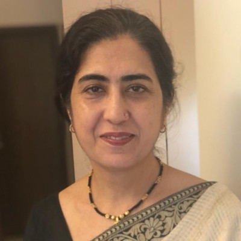

Special Education
Individualized learning, communication and developmental support for children and families, with a particular focus on autism.
Explore special educationDr. Meeta Bali · Mumbai
Special education, gentle bodywork and systemic practice, brought together with presence, respect and a whole-person approach.
For children and families, adults, and those exploring the patterns in their relationships or organizations.
Not sure which approach is right for you? Start with a question.

Ways to work together
Learn about each area of practice, then choose your next step.
Individualized learning, communication and developmental support for children and families, with a particular focus on autism.
Explore special educationA gentle, light-touch practice with space for stillness, body awareness and a quieter pace.
Explore craniosacral therapyAn experiential way to explore relationships and patterns within families, organizations and personal life.
Explore constellation workAn opportunity to explore the breath and your felt experience, with attention to individual needs and pacing.
Explore breathwork & rebirthingYour first step
A short enquiry is enough. You do not need to choose a therapy in advance.
Ask about the approach, suitability, fees and available appointment formats.
Arrange a session directly with Meeta once your questions have been discussed.
For the curious
Get a clearer picture of the work before reaching out.
Browse FAQs & videos ↗It is a complementary practice using light touch. Visit the craniosacral page for an introduction to the biodynamic approach and what a session may involve.
Yes. Share what you would like support with, and ask Meeta which area of her practice may be relevant.
Meeta prefers messages, not calls, and responds within 24 hours. Visit the contact page for details. Appointments are arranged directly with her.
Learning with Meeta
Interested in learning Biodynamic Craniosacral Therapy?
Meeta is an International Teacher in Training under the Biodynamic Craniosacral Therapy Association of North America (BCTA/NA). She welcomes interest from prospective students as she prepares to begin teaching.
Explore learning opportunities ↗A first step, at your pace
Tell Meeta a little about what brings you here. You can ask a question or enquire about a session.